9 More graphical functions
Graphical functions in R are just like any other function in R in the sense that R provides you with a set of functions which can be altered or added to. In this exercise we will experiment with some of the graphical functions provided by R to demonstrate the flexibility of graphical functions in R. We will then use the graphical functions that we experiment with to create some useful graphical functions of our own.
The first function that we will develop will be a function that is capable of plotting two data series on a single graph. We will take this exercise slowly in order to introduce some further graphical functions.
Before we go any further we should start R and retrieve a dataset:
mal <- read.table("malaria.dat", header = TRUE)
attach(mal)The file malaria.dat contains data on rainfall (in mm) and the number of cases of malaria reported from health centres in an administrative district of Ethiopia between July 1997 and July 1999. The columns in this dataset are as follows:
| Time | Month and year (as text) |
| Cases | Number of cases of malaria reported |
| Rain | Rainfall in mm |
Examine the dataset:
mal## Time Cases Rain
## 1 Jul-97 997 68.5
## 2 Aug-97 824 162.1
## 3 Sep-97 573 138.8
## 4 Oct-97 586 222.2
## 5 Nov-97 523 115.5
## 6 Dec-97 968 37.2
## 7 Jan-98 985 96.6
## 8 Feb-98 745 99.1
## 9 Mar-98 520 51.2
## 10 Apr-98 406 80.0
## 11 May-98 523 112.4
## 12 Jun-98 560 183.7
## 13 Jul-98 671 101.0
## 14 Aug-98 667 252.5
## 15 Sep-98 768 40.8
## 16 Oct-98 990 193.7
## 17 Nov-98 775 17.5
## 18 Dec-98 833 0.0
## 19 Jan-99 672 33.5
## 20 Feb-99 505 0.0
## 21 Mar-99 320 106.8
## 22 Apr-99 274 117.4
## 23 May-99 263 175.8
## 24 Jun-99 264 187.5
## 25 Jul-99 179 283.5First we will plot the number of cases of malaria seen over time using the plot() function:
plot(Cases, type = "l")
The problem with this plot is that it does not treat the data as a time series. Adding the Time variable to the plot does not solve the problem:
plot(Time, Cases, type = "l")
Because Time is a factor variable. If you convert Time to a character variable using as.character() or prevent R from converting Time to a factor using the as.is parameter to the read.table() function the plot() function will return an error because it expects a numeric x-axis variable. We should, instead, specify a time series (ts) class object. Rather than change the original data, we will create a new object using the ts() function:
cases.ts <- ts(Cases, start = c(1997, 7), frequency = 12)Examine the cases.ts object:
cases.ts## Jan Feb Mar Apr May Jun Jul Aug Sep Oct Nov Dec
## 1997 997 824 573 586 523 968
## 1998 985 745 520 406 523 560 671 667 768 990 775 833
## 1999 672 505 320 274 263 264 179We can now plot cases.ts as a time series:
plot(cases.ts)
We might want to explore the association between the Rain and Cases variables. A simple scatter plot is not particularly informative:
plot(Rain, Cases)
It is better to treat both variables as time series (which they are) and use the built-in plot() methods for objects of class ts:
rain.cases.ts <- ts(cbind(Rain, Cases), start = c(1997,7), frequency = 12)
plot(rain.cases.ts)
The association between the Rain and Cases variables is now clearer with the number of malaria cases peaking shortly after peaks in rainfall.
The plot() function when used with objects of class ts produces useful output but it is not particularly flexible and the output is, sometimes, not particularly pretty. We can however use basic graphical functions to produce multiple plots. First we will set the mfrow graphical parameter using the par() function:
par(mfrow = c(2, 1))The par() function sets a graphical parameter. The mfrow parameter is used to set the number of charts that will appear on a page in rows and columns. We have specified two rows with one chart per row. Test this by plotting two charts:
plot(Rain, type = "l")
plot(Cases, type = "l")
We will want to have tick-marks on the x-axis of each for each record. We can set the number of tick-marks on axes by setting the lab graphical parameter using the par() function:
par(lab = c(length(Time), 10, 7))The par() function sets a graphical parameter. The lab parameter is used to set the number tick-marks on the x and y axes and the label size. We have specified a tick-mark on the x-axis for each record (i.e. using length(Time)), ten tick-marks on the y-axis, and a label length of seven. Test this by plotting two charts:
plot(Rain, type = "l")
plot(Cases, type = "l")
The problem with these charts is that the month and year are not displayed on the x-axis. We can get round this by plotting a chart without axes and then specifying the axes and labels directly:
plot(Rain, type = "l", axes = FALSE, xlab = "Time", ylab = "mm", main = "Rainfall")
axis(side = 1, labels = as.character(Time), at = 1:length(Time))
axis(side = 2)
plot(Cases, type = "l", axes = FALSE, xlab = "Time", ylab = "n", main = "Cases")
axis(side = 1, labels = as.character(Time), at = 1:length(Time))
axis(side = 2)
The resulting charts now look much better (you may need to resize the plot to display the x-axis labels correctly) but it would be nice to be able draw the two lines on a single chart.
Before proceeding we will use the par() function to specify one plot per window (using the mfrow parameter) and set the default number of tick-marks on the axes (using the lab parameter):
par(mfrow = c(1, 1))
par(lab = c(5, 5, 7))And then use the plot() and lines() function to draw the two lines on the same graph:
plot(Cases, type = "l")
lines(Rain, lty = 2)
The problem with this is that the ranges of the two variables are different and the plot() function automatically sets the y-axis to the range of the specified variable. To fix this problem we need to set the limits of the y-axis to the minimum and maximum value of both of variables using the ylim parameter of the plot() function:
plot(Cases, type = "l", ylim = c(min(Cases, Rain), max(Cases, Rain)))
lines(Rain, lty = 2)
We can improve the chart by adding a legend:
legend(18, 1000, legend = c("Cases", "Rainfall (mm)"), lty = c(1,2))
We could continue to improve the chart (e.g. by adding labels for the x-axis tick-marks taken from the Time variable, specifying more meaningful axis labels, and specifying a title) but the chart would be more useful if each variable made full use of the plotting area. We can do this by plotting one chart on top of another by using the new graphical parameter:
par(lab = c(length(Time), 5, 7))
plot(Cases, type = "l", lty = 1, axes = FALSE)
axis(side = 2)
par(new = TRUE)
plot(Rain, type = "l", lty = 2, axes = FALSE)
axis(side = 4)
axis(side = 1)
This chart is much clearer but there are still some improvements that could be made:
The chart should have a title. We can do this using the
mainparameter of either of theplot()functions.The y-axis labels are displayed on top of each other beside the left-hand y-axis. We can solve this problem by preventing the second
plot()function from displaying a y-axis label (i.e. by specifying an empty character string for theylabparameter).We will need to make room on the right-hand side of the chart for an axis label (i.e. by setting the
mar(margin) graphical parameter) and place the label there ourselves (using themtext()function).The x-axis should display the month and year which are held as character strings in the
Timevariable. We can do this using the labels parameter of theaxis()function after setting the appropriate number of tick-marks using thelabgraphical parameter.
The x-axis should be properly labelled. We can do this using the xlab parameters of the plot() functions. An empty string must be specified for one of the plot() functions in order to prevent the default label from being displayed.
Try this now:
par(mar = c(5, 5, 4, 5))
par(lab = c(length(Time), 5, 7))
plot(Cases, type = "l", lty = 1, axes = FALSE,
xlab = "", ylab = "", main = "Malaria cases and rainfall")
axis(side = 2)
mtext(text = "Malaria cases", side = 2, line = 3)
par(new = TRUE)
plot(Rain, type = "l", lty = 2, axes = FALSE,
xlab = "Month & Year", ylab = "")
axis(side = 4)
mtext(text = "Rainfall (mm)", side = 4, line = 3)
axis(side = 1, labels = as.character(Time), at = 1:length(Time))
Now that we know how to create a two-axis chart, we can write a function that we will be able to use whenever we need to plot two variables on the same chart. Create a new function called plot2var():
plot2var <- function() {}This creates an empty function called plot2var().
Use the fix() function to edit the plot2var() function:
fix(plot2var)Edit the function to read:
function(y1,
y2,
x.ticks,
x.lab = deparse(substitute(x.ticks)),
y1.lab = deparse(substitute(y1)),
y2.lab = deparse(substitute(y2)),
main = paste(y1.lab, "&", y2.lab)) {
old.par.mar <- par("mar")
old.par.lab <- par("lab")
par(mar = c(5, 5, 4, 5))
if(!missing(x.ticks)) {par(lab = c(length(x.ticks), 5, 7))}
plot(y1, type = "l", lty = 1, axes = FALSE,
xlab = "", ylab = "", main = main)
axis(side = 2)
mtext(text = y1.lab, side = 2, line = 3)
par(new = TRUE)
plot(y2, type = "l", lty = 2, axes = FALSE,
ylab = "", xlab = x.lab)
axis(side = 4)
mtext(text = y2.lab, side = 4, line = 3)
if(!missing(x.ticks)) {
axis(side = 1, labels = as.character(x.ticks),
at = 1:length(x.ticks))
} else {axis(side = 1)}
par(mar = old.par.mar)
par(lab = old.par.lab)
}Once you have made the changes shown above, save the file and quit the editor.
Note that with this function we have given some of the parameters default values in the function definition and we have also used the if() function to check whether the user specified a value for the x.ticks parameter. We also save and restore the graphical parameters mar and lab so as to prevent changes to these parameters in the plot2var() function affecting other graphical functions.
Let’s try the plot2var() function with the test data:
plot2var(Rain, Cases)
plot2var(Rain, Cases, Time)
Note how the function has used default values for the axis labels and chart title. We can override these default values if we want to:
plot2var(Rain, Cases, Time, x.lab = "Month and Year",
y1.lab = "Rainfall (mm)", y2.lab = "Cases of malaria")
You might like to use the save() function to save the plot2var() function.
As an exercise you might want to edit the plot2var() function to automatically add a legend to the two-axis
chart using the legend() function with y1.lab and y2.lab. Before continuing we should detach the mal data.frame:
detach(mal)9.1 Population pyramid
A common chart type that is not available in many statistical applications and in R is the population pyramid.
Before we go any further we should retrieve a dataset:
pop <- read.table("pop.dat", header = TRUE)
attach(pop)## The following objects are masked from fem (pos = 4):
##
## AGE, SEX## The following objects are masked from fem (pos = 5):
##
## AGE, SEX## The following objects are masked from fem (pos = 10):
##
## AGE, SEXThe file pop.dat contains data on the age (in months) and sex of 438 children aged between six and sixty months collected as part of a nutritional anthropometry survey of the Khosh Valley in Northeast Afghanistan.
The columns in this dataset are as follows:
| AGE | Age of the child in months |
| SEX | Sex of the child (M/F) |
Examine the first twenty records of the dataset:
pop[1:20, ]## AGE SEX
## 1 7 M
## 2 42 M
## 3 60 M
## 4 60 F
## 5 48 M
## 6 60 F
## 7 18 M
## 8 48 M
## 9 60 F
## 10 36 M
## 11 24 F
## 12 60 M
## 13 60 M
## 14 48 F
## 15 18 M
## 16 60 M
## 17 6 M
## 18 7 M
## 19 12 M
## 20 60 MThe first step is to make groups from the AGE variable since many ages are biased towards full years:
table(AGE)
barplot(table(AGE), col = "white")## AGE
## 6 7 8 9 10 12 13 14 15 17 18 22 23 24 25 26 30 34 36 38 40 42 48 54 60
## 7 5 8 15 3 21 1 3 5 1 45 1 1 48 1 2 24 1 80 2 1 9 67 4 83
So we will centre the age-groups around the months representing full years:
age.group <- cut(AGE, c(0, 17, 29, 41, 53, 99))We can check that the grouping operation has worked as expected by tabulating AGE and age.group:
table(AGE, age.group)## age.group
## AGE (0,17] (17,29] (29,41] (41,53] (53,99]
## 6 7 0 0 0 0
## 7 5 0 0 0 0
## 8 8 0 0 0 0
## 9 15 0 0 0 0
## 10 3 0 0 0 0
## 12 21 0 0 0 0
## 13 1 0 0 0 0
## 14 3 0 0 0 0
## 15 5 0 0 0 0
## 17 1 0 0 0 0
## 18 0 45 0 0 0
## 22 0 1 0 0 0
## 23 0 1 0 0 0
## 24 0 48 0 0 0
## 25 0 1 0 0 0
## 26 0 2 0 0 0
## 30 0 0 24 0 0
## 34 0 0 1 0 0
## 36 0 0 80 0 0
## 38 0 0 2 0 0
## 40 0 0 1 0 0
## 42 0 0 0 9 0
## 48 0 0 0 67 0
## 54 0 0 0 0 4
## 60 0 0 0 0 83We now use the table() function to produce the summary data for the population pyramid:
table(age.group, SEX)## SEX
## age.group F M
## (0,17] 34 35
## (17,29] 54 44
## (29,41] 49 59
## (41,53] 39 37
## (53,99] 41 46We will construct our population pyramid using the barplot() function:
barplot(table(age.group, SEX))
The default behaviour of the barplot() function is to produce stacked bars. We can set the beside parameter to display the bars side-by-side:
barplot(table(age.group, SEX), beside = TRUE)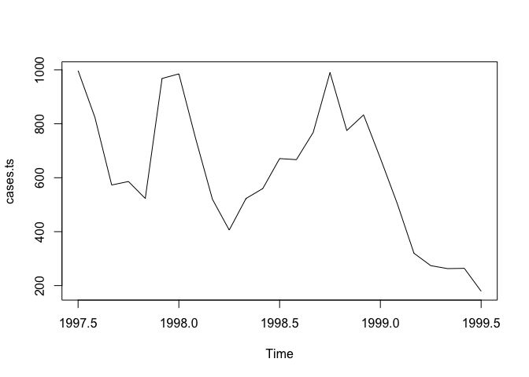
We can also use the horiz parameter to present the data as horizontal bars:
barplot(table(age.group, SEX), beside = TRUE, horiz = TRUE)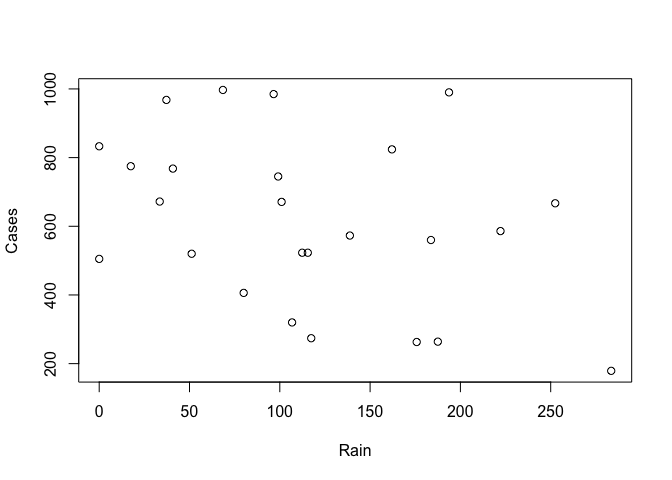
In order to centre the bars around zero we need to make one column of the summary data table contain negative numbers:
tab <- table(age.group, SEX)
tab## SEX
## age.group F M
## (0,17] 34 35
## (17,29] 54 44
## (29,41] 49 59
## (41,53] 39 37
## (53,99] 41 46tab[ ,1] <- -tab[ ,1]
tab## SEX
## age.group F M
## (0,17] -34 35
## (17,29] -54 44
## (29,41] -49 59
## (41,53] -39 37
## (53,99] -41 46barplot(tab, beside = TRUE, horiz = TRUE)
This is looking better.
We still need to shift the second set of bars down beside the first set of bars using thespace parameter:
barplot(tab, beside = TRUE, horiz = TRUE, space = c(0, -nrow(tab)))
The axis labels are wrong but we can fix that using the names.arg parameter:
bar.names <- c(dimnames(tab)$age.group, dimnames(tab)$age.group)
barplot(tab, beside = TRUE, horiz = TRUE, space = c(0, -nrow(tab)),
names.arg = bar.names)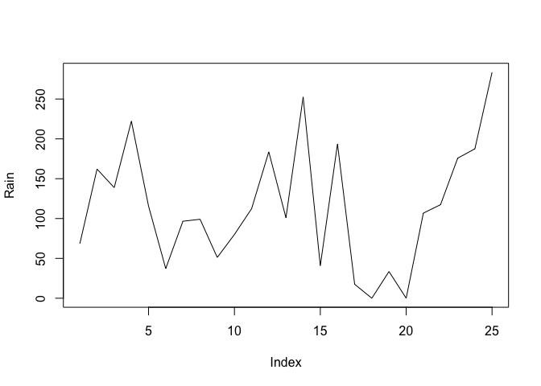
The chart can still be improved upon by making the fill-colour of each bar white and by expanding the x-axis slightly:
barplot(tab, beside = TRUE, horiz = TRUE, space = c(0, -nrow(tab)),
col = "white", xlim = c(min(tab) * 1.2, max(tab) * 1.2),
names.arg = bar.names)The chart would be better if the x-axis displayed only positive numbers:
barplot(tab, beside = TRUE, horiz = TRUE, space = c(0, -nrow(tab)),
col = "white", xlim = c(min(tab) * 1.2, max(tab) * 1.2),
names.arg = bar.names, axes = FALSE)
axis(side = 1,
labels = abs(axTicks(side = 1)),
at = (axTicks(side = 1)))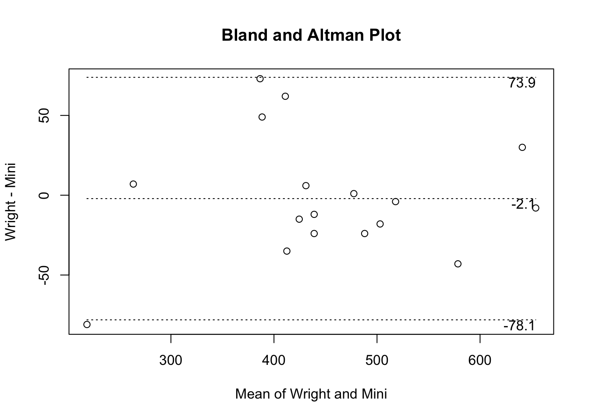
Now we know how to create a population pyramid, we can write a function that we will be able to use whenever we need to plot a population pyramid.
Create a new function called pyramid.plot():
pyramid.plot <- function() {}This creates an empty function called pyramid.plot().
Use the fix() function to edit the pyramid.plot() function:
fix(pyramid.plot)Edit the function to read:
function(x,
g,
main = paste("Pyramid plot of", deparse(substitute(x)),
"by", deparse(substitute(g))),
xlab = paste(deparse(substitute(g)),
"(", levels(g)[1], "/",levels(g)[2],")"),
ylab = deparse(substitute(x))) {
tab <- table(x, g)
tab[ ,1] <- -tab[ ,1]
barplot(tab,
horiz = TRUE,
beside = TRUE,
space = c(0, -nrow(tab)),
names.arg = c(dimnames(tab)$x, dimnames(tab)$x),
xlim = c(min(tab) * 1.2,
max(tab) * 1.2),
col = "white",
main = main,
xlab = xlab,
ylab = ylab,
axes = FALSE)
axis(side = 1,
labels = abs(axTicks(side = 1)),
at = (axTicks(side = 1)))
}Note that with this function we have given some of the parameters default values in the function definition.
Giving default values to parameters is useful because it means that you do not need to specify parameters such as titles and axis labels unless you want to. Many R functions use default parameters which are usually set to the most frequently used values.
Once you have made the changes shown above, check your work, save the file, and quit the editor. Let’s try the pyramid.plot() function with the test data:
pyramid.plot(age.group, SEX)Note how the function has used default values for the axis labels and chart titles. We can override these default values if we want to:
pyramid.plot(age.group, SEX, ylab = "Months", xlab = "Sex F / M",
main = "Children by age and sex")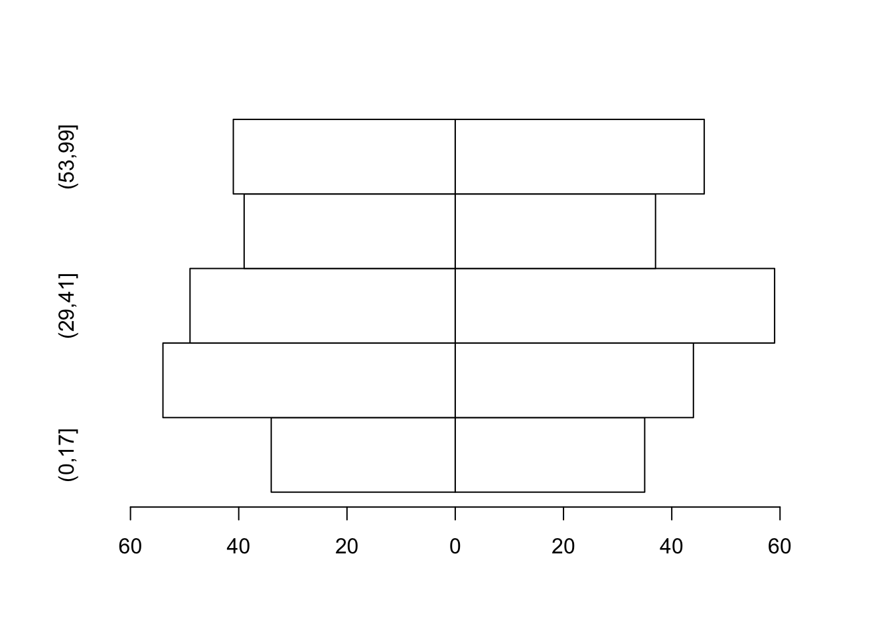
You might like to use the save() function to save the pyramid.plot() function.
9.2 Pareto chart
Another type of chart that is missing from many statistical applications is the Pareto chart which is a bar chart where the bars are sorted by the bar value with the largest bar drawn first. Such a chart is easier to interpret than a pie chart, particularly when there are more than a few categories being plotted.
Before we go any further we should detach the pop data.frame and retrieve a new dataset:
detach(pop)
sssw <- read.table("sssw.dat", header = TRUE)
attach(sssw)The file sssw.dat contains data on the marital status, home circumstances, and ethnic group of 152 persons recruited into a study into the levels of stress experienced by student social workers in the United Kingdom. The columns in this dataset are as follows:
+—————+—————————————-+ | marital | Marital status coded as: | | | | | | 1 = Married | | | | | | 2 = Single | | | | | | 3 = Divorced | | | | | | 4 = Separated | | | | | | 5 = Cohabiting | | | | | | 6 = Widowed | +—————+—————————————-+ +—————+—————————————-+ | living | Living with … coded as: | | | | | | 1 = Alone | | | | | | 2 = Parents or siblings | | | | | | 3 = Partner | | | | | | 4 = Partner and children | | | | | | 5 = Children | | | | | | 6 = Friends or colleagues | +—————+—————————————-+ +—————+—————————————-+ | ethnic | Ethnic group coded as: | | | | | | 1 = African | | | | | | 2 = West-Indian | | | | | | 3 = Indian | | | | | | 4 = Pakistani | | | | | | 5 = Bangladeshi | | | | | | 6 = East African Asian | | | | | | 7 = Chinese | | | | | | 8 = Cypriot | | | | | | 9 = Black European | | | | | | 10 = White European | | | | | | 11 = Other | +—————+—————————————-+
Examine the dataset:
sssw[1:20, ]## marital living ethnic
## 1 2 5 2
## 2 1 4 2
## 3 1 1 11
## 4 1 4 10
## 5 2 3 10
## 6 2 6 10
## 7 1 4 10
## 8 1 4 10
## 9 2 2 4
## 10 2 6 10
## 11 2 5 10
## 12 1 3 1
## 13 5 3 10
## 14 1 4 10
## 15 2 6 3
## 16 1 4 10
## 17 1 3 3
## 18 5 3 10
## 19 3 5 10
## 20 5 3 10Producing a bar chart from this data is simple as long as we remember to pass summary data (i.e. created using the table() function) to the barplot() function instead of the variable name:
barplot(table(marital))
barplot(table(living))
barplot(table(ethnic))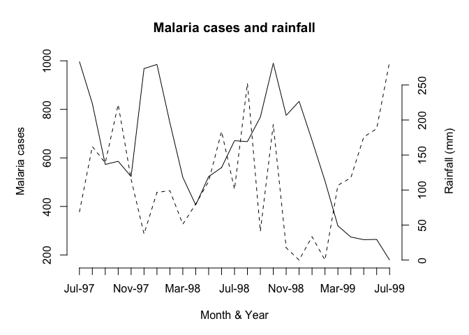

Creating a Pareto chart only requires us to sort the summary data. We do this using the rev() and sort() functions:
barplot(rev(sort(table(marital))))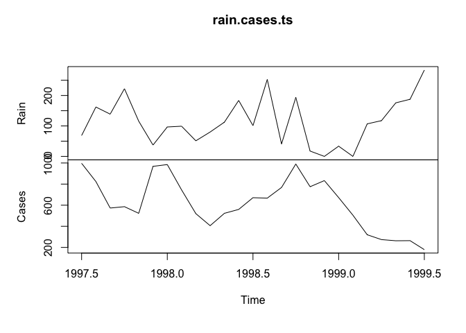
Having to specify rev(sort(table(variable))) each time we want to produce a Pareto plot is rather tedious but now that we know how to create a Pareto chart, we can write a function that we will be able to use whenever we need to plot a Pareto chart. Create a new function called pareto():
pareto <- function() {}This creates an empty function called pareto(). Use the fix() function to edit the pareto() function:
fix(pareto)Edit the function to read:
function(x,
xlab = deparse(substitute(x)),
ylab = "Count",
main = paste("Pareto Chart of", deparse(substitute(x)))) {
barplot(rev(sort(table(x))),
xlab = xlab,
ylab = ylab,
main = main,
col = "white")
}Once you have made the changes shown above, check your work, save the file, and quit the editor.
Let’s try the pareto() function with the test data:
pareto(marital)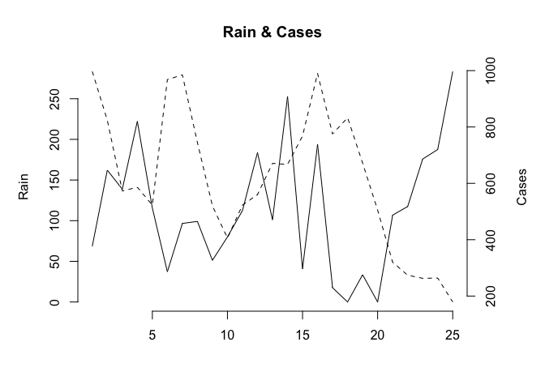
Note how the function has used default values for the axis labels and chart titles. We can override these default values if we want to:
pareto(marital, ylab = "n", xlab = "Marital Status",
main = "Marital Status")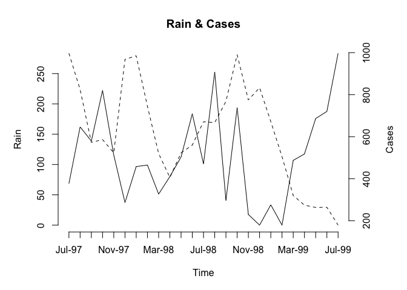
Note that we can use value labels if the variable we plot is a factor with value labels as levels rather than a simple numeric vector:
ms <- as.factor(marital)
levels(ms) <- c("Married", "Single", "Divorced", "Separated",
"Cohabiting", "Widowed")
table(ms)
pareto(ms, ylab = "n", xlab = "Marital Status",
main = "Marital Status")## ms
## Married Single Divorced Separated Cohabiting Widowed
## 32 90 5 4 21 0
You may need to resize the plot to display the x-axis labels correctly.
You might like to use the save() function to save the pareto() function.
9.3 Confidence intervals or error bars
You may want to plot your data with confidence intervals or error bars. R does not have a function to do this but it is a relatively simple matter to write a function to do so. On the way we will use some of Rs data management functions as well.
Before we go any further we should detach the sssw data.frame and retrieve a new dataset:
detach(sssw)
diets <- read.table("diets.dat", header = TRUE)The file diets.dat contains data from a trial of two different diets undertaken at an adult therapeutic feeding centre in Somalia. The columns in this dataset are as follows:
| day | The day after start of diet that measurements were taken |
| oedema | Type of undernutrition coded as: 1 = Oedematous; 2 = Marasmic |
| diet | The trial diets coded as: LP = Low protein; HP = High protein |
| wt | Mean weight change weight velocity) in g/kg/day since the previous measurement |
| sd | Standard deviation of weight change in g/kg/day |
| n | Number of subjects at each observation |
Examine the dataset:
diets## day oedema diet wt sd n
## 1 3 1 HP 1.1 11.5 37
## 2 6 1 HP 1.0 11.0 37
## 3 9 1 HP 1.2 8.4 37
## 4 12 1 HP -1.0 7.4 37
## 5 15 1 HP -0.9 3.2 37
## 6 18 1 HP -1.7 5.8 37
## 7 21 1 HP -1.7 4.8 37
## 8 24 1 HP -1.7 4.8 37
## 9 27 1 HP -1.7 5.3 37
## 10 30 1 HP -2.5 6.8 37
## 11 33 1 HP -1.3 8.4 37
## 12 3 2 HP 5.1 15.1 291
## 13 6 2 HP 5.1 13.4 291
## 14 9 2 HP 4.5 6.5 291
## 15 12 2 HP 5.2 9.9 291
## 16 15 2 HP 4.6 8.2 291
## 17 18 2 HP 5.1 13.4 291
## 18 21 2 HP 5.0 13.4 291
## 19 24 2 HP 5.2 15.1 291
## 20 27 2 HP 5.1 11.6 291
## 21 30 2 HP 5.0 9.2 291
## 22 33 2 HP 5.2 8.2 291
## 23 3 1 LP -3.0 15.7 65
## 24 6 1 LP -2.5 11.9 65
## 25 9 1 LP -2.0 13.7 65
## 26 12 1 LP 2.0 11.0 65
## 27 15 1 LP 2.1 13.2 65
## 28 18 1 LP 1.7 16.2 65
## 29 21 1 LP 4.0 11.0 65
## 30 24 1 LP 6.5 14.7 65
## 31 27 1 LP 6.4 10.2 65
## 32 30 1 LP 6.6 8.0 65
## 33 33 1 LP 6.5 11.0 65
## 34 3 2 LP 5.1 11.1 86
## 35 6 2 LP 6.0 8.2 86
## 36 9 2 LP 5.1 8.2 86
## 37 12 2 LP 6.5 11.9 86
## 38 15 2 LP 6.4 9.1 86
## 39 18 2 LP 5.9 13.8 86
## 40 21 2 LP 6.1 16.5 86
## 41 24 2 LP 4.0 9.1 86
## 42 27 2 LP 3.1 12.8 86
## 43 30 2 LP 4.0 7.3 86
## 44 33 2 LP 5.0 9.1 86Note that the dataset contains a summary of the results from the four arms of the trial:
| Arm | Oedema | Therapeutic diet |
|---|---|---|
| 1 | Present | High protein |
| 2 | Present | Low protein |
| 3 | Absent | High protein |
| 4 | Absent | Low protein |
with observations at 3, 6, 9, 12, 15, 18, 21, 24, 27, 30, and 33 days after admission.
We can calculate a confidence interval for the mean weight velocity (wt) using the data in the sd and n
variables. We will use the transform() function to do this:
diets <- transform(diets, lci = wt - sd / sqrt(n), uci = wt + sd / sqrt(n))In this case we are calculating confidence intervals as plus or minus one standard error of the mean.
The transform() function is very useful as it can add columns directly to a data.frame or transform data already stored in a data.frame.
Examine the diets data.frame:
diets## day oedema diet wt sd n lci uci
## 1 3 1 HP 1.1 11.5 37 -0.7905884 2.99058835
## 2 6 1 HP 1.0 11.0 37 -0.8083889 2.80838886
## 3 9 1 HP 1.2 8.4 37 -0.1809515 2.58095149
## 4 12 1 HP -1.0 7.4 37 -2.2165525 0.21655251
## 5 15 1 HP -0.9 3.2 37 -1.4260768 -0.37392324
## 6 18 1 HP -1.7 5.8 37 -2.6535141 -0.74648587
## 7 21 1 HP -1.7 4.8 37 -2.4891151 -0.91088486
## 8 24 1 HP -1.7 4.8 37 -2.4891151 -0.91088486
## 9 27 1 HP -1.7 5.3 37 -2.5713146 -0.82868537
## 10 30 1 HP -2.5 6.8 37 -3.6179131 -1.38208689
## 11 33 1 HP -1.3 8.4 37 -2.6809515 0.08095149
## 12 3 2 HP 5.1 15.1 291 4.2148223 5.98517768
## 13 6 2 HP 5.1 13.4 291 4.3144781 5.88552191
## 14 9 2 HP 4.5 6.5 291 4.1189633 4.88103675
## 15 12 2 HP 5.2 9.9 291 4.6196517 5.78034828
## 16 15 2 HP 4.6 8.2 291 4.1193075 5.08069251
## 17 18 2 HP 5.1 13.4 291 4.3144781 5.88552191
## 18 21 2 HP 5.0 13.4 291 4.2144781 5.78552191
## 19 24 2 HP 5.2 15.1 291 4.3148223 6.08517768
## 20 27 2 HP 5.1 11.6 291 4.4199960 5.78000404
## 21 30 2 HP 5.0 9.2 291 4.4606864 5.53931355
## 22 33 2 HP 5.2 8.2 291 4.7193075 5.68069251
## 23 3 1 LP -3.0 15.7 65 -4.9473453 -1.05265467
## 24 6 1 LP -2.5 11.9 65 -3.9760133 -1.02398666
## 25 9 1 LP -2.0 13.7 65 -3.6992759 -0.30072414
## 26 12 1 LP 2.0 11.0 65 0.6356179 3.36438208
## 27 15 1 LP 2.1 13.2 65 0.4627415 3.73725850
## 28 18 1 LP 1.7 16.2 65 -0.3093627 3.70936270
## 29 21 1 LP 4.0 11.0 65 2.6356179 5.36438208
## 30 24 1 LP 6.5 14.7 65 4.6766894 8.32331060
## 31 27 1 LP 6.4 10.2 65 5.1348457 7.66515429
## 32 30 1 LP 6.6 8.0 65 5.6077221 7.59227788
## 33 33 1 LP 6.5 11.0 65 5.1356179 7.86438208
## 34 3 2 LP 5.1 11.1 86 3.9030562 6.29694378
## 35 6 2 LP 6.0 8.2 86 5.1157713 6.88422874
## 36 9 2 LP 5.1 8.2 86 4.2157713 5.98422874
## 37 12 2 LP 6.5 11.9 86 5.2167900 7.78321000
## 38 15 2 LP 6.4 9.1 86 5.4187218 7.38127824
## 39 18 2 LP 5.9 13.8 86 4.4119077 7.38809227
## 40 21 2 LP 6.1 16.5 86 4.3207592 7.87924076
## 41 24 2 LP 4.0 9.1 86 3.0187218 4.98127824
## 42 27 2 LP 3.1 12.8 86 1.7197405 4.48025950
## 43 30 2 LP 4.0 7.3 86 3.2128208 4.78717924
## 44 33 2 LP 5.0 9.1 86 4.0187218 5.98127824Two new columns (lci and uci) have been added.
Now that we have calculated the confidence intervals we should, for convenience, split the diets data.frame into four separate data.frames (one for each arm of the trial):
oed.hp <- subset(diets, oedema == 1 & diet == "HP")
oed.lp <- subset(diets, oedema == 1 & diet == "LP")
mar.hp <- subset(diets, oedema == 2 & diet == "HP")
mar.lp <- subset(diets, oedema == 2 & diet == "LP")Check that each data.frame contains the data that you expect it to:
oed.hp
oed.lp
mar.hp
mar.lp## day oedema diet wt sd n lci uci
## 1 3 1 HP 1.1 11.5 37 -0.7905884 2.99058835
## 2 6 1 HP 1.0 11.0 37 -0.8083889 2.80838886
## 3 9 1 HP 1.2 8.4 37 -0.1809515 2.58095149
## 4 12 1 HP -1.0 7.4 37 -2.2165525 0.21655251
## 5 15 1 HP -0.9 3.2 37 -1.4260768 -0.37392324
## 6 18 1 HP -1.7 5.8 37 -2.6535141 -0.74648587
## 7 21 1 HP -1.7 4.8 37 -2.4891151 -0.91088486
## 8 24 1 HP -1.7 4.8 37 -2.4891151 -0.91088486
## 9 27 1 HP -1.7 5.3 37 -2.5713146 -0.82868537
## 10 30 1 HP -2.5 6.8 37 -3.6179131 -1.38208689
## 11 33 1 HP -1.3 8.4 37 -2.6809515 0.08095149## day oedema diet wt sd n lci uci
## 23 3 1 LP -3.0 15.7 65 -4.9473453 -1.0526547
## 24 6 1 LP -2.5 11.9 65 -3.9760133 -1.0239867
## 25 9 1 LP -2.0 13.7 65 -3.6992759 -0.3007241
## 26 12 1 LP 2.0 11.0 65 0.6356179 3.3643821
## 27 15 1 LP 2.1 13.2 65 0.4627415 3.7372585
## 28 18 1 LP 1.7 16.2 65 -0.3093627 3.7093627
## 29 21 1 LP 4.0 11.0 65 2.6356179 5.3643821
## 30 24 1 LP 6.5 14.7 65 4.6766894 8.3233106
## 31 27 1 LP 6.4 10.2 65 5.1348457 7.6651543
## 32 30 1 LP 6.6 8.0 65 5.6077221 7.5922779
## 33 33 1 LP 6.5 11.0 65 5.1356179 7.8643821## day oedema diet wt sd n lci uci
## 12 3 2 HP 5.1 15.1 291 4.214822 5.985178
## 13 6 2 HP 5.1 13.4 291 4.314478 5.885522
## 14 9 2 HP 4.5 6.5 291 4.118963 4.881037
## 15 12 2 HP 5.2 9.9 291 4.619652 5.780348
## 16 15 2 HP 4.6 8.2 291 4.119307 5.080693
## 17 18 2 HP 5.1 13.4 291 4.314478 5.885522
## 18 21 2 HP 5.0 13.4 291 4.214478 5.785522
## 19 24 2 HP 5.2 15.1 291 4.314822 6.085178
## 20 27 2 HP 5.1 11.6 291 4.419996 5.780004
## 21 30 2 HP 5.0 9.2 291 4.460686 5.539314
## 22 33 2 HP 5.2 8.2 291 4.719307 5.680693## day oedema diet wt sd n lci uci
## 34 3 2 LP 5.1 11.1 86 3.903056 6.296944
## 35 6 2 LP 6.0 8.2 86 5.115771 6.884229
## 36 9 2 LP 5.1 8.2 86 4.215771 5.984229
## 37 12 2 LP 6.5 11.9 86 5.216790 7.783210
## 38 15 2 LP 6.4 9.1 86 5.418722 7.381278
## 39 18 2 LP 5.9 13.8 86 4.411908 7.388092
## 40 21 2 LP 6.1 16.5 86 4.320759 7.879241
## 41 24 2 LP 4.0 9.1 86 3.018722 4.981278
## 42 27 2 LP 3.1 12.8 86 1.719741 4.480259
## 43 30 2 LP 4.0 7.3 86 3.212821 4.787179
## 44 33 2 LP 5.0 9.1 86 4.018722 5.981278We can now plot the data for one arm of the trial:
plot(oed.hp$day, oed.hp$wt, type = "l")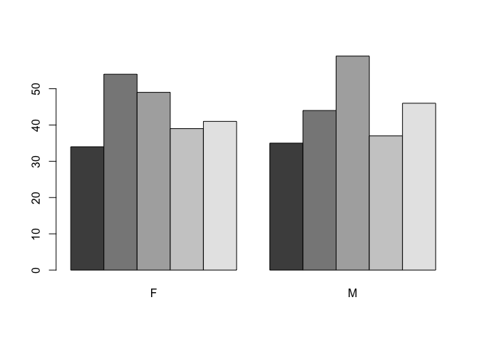
We can add error bars using the arrows() function:
arrows(oed.hp$day, oed.hp$lci, oed.hp$day, oed.hp$uci, code = 3, angle = 90, length = 0.1)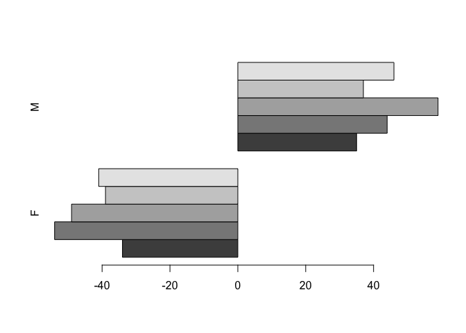
The scale of the y axis is wrong because the plot() function automatically scales axes to the ranges of the x and y data it is given. We can fix this by specifying a different set of limits (from lci and uci) for the y axis using the ylim parameter:
plot(oed.hp$day, oed.hp$wt, type = "l", ylim = c(min(oed.hp$lci), max(oed.hp$uci)))
arrows(oed.hp$day, oed.hp$lci, oed.hp$day, oed.hp$uci, code = 3, angle = 90, length = 0.1)The plot might also be improved by adding plotting symbols:
points(oed.hp$day, oed.hp$wt, pch = 21, bg = "white")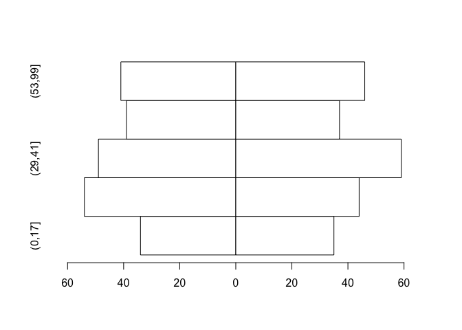
The axis titles (oed.hp$day and oed.hp$wt) are the column (variable) names.
We can specify titles and axes labels in the call to the plot() function:
plot(oed.hp$day, oed.hp$wt, type = "l",
ylim = c(min(oed.hp$lci), max(oed.hp$uci)),
main = "HP Diet. Oedematous Cases",
xlab = "Days of treatment", ylab = "Weight gain (g/kg/d)")
arrows(oed.hp$day, oed.hp$lci, oed.hp$day, oed.hp$uci,
code = 3, angle = 90, length = 0.1)
points(oed.hp$day, oed.hp$wt, pch = 21, bg = "white")
Now that we know how to plot error bars, we can write a function that we will be able to use whenever we need to plot data with error bars.
Before continuing we will consider what the new function should be able to do. This will help us when it comes to writing the function. Our new function should:
Take four numeric vectors (x, y, lower CI for y, and upper CI for y) and plot them.
Be able to plot the data points as unconnected points or as points joined by lines.
Calculateappropriatelimitsfortheyaxis.
Produce a plot without axes so that more than one data series may be plotted on the same chart. 5. Provide sensible default values for axis limits and labels.
From this list we know that we need the function to take several parameters:
| Name | Purpose | Default value |
|---|---|---|
x |
Data to plot | None |
y |
Data to plot | None |
y.lci |
Data to plot | None |
y.uci |
Data to plot | None |
ylim |
Limits for y axis | c(min(y.lci), max(y.uci)) |
xlab |
Label for x axis | deparse(substitute(x)) |
ylab |
Label for y axis | deparse(substitute(y)) |
main |
Chart title | paste(ylab, "by", xlab) |
type |
Type of plot | "l" |
lty |
Line type | 1 |
col |
Line and point colour | "black" |
axes |
Draw x and y axes | TRUE |
pch |
Type of points to plot | 1 |
bg |
Fill colour of point | white |
The parameter names have been chosen to be the same as the parameter names to plot() and points(). This makes the function easier to use. It also makes the function easier to write.
Create a new function called plot.ci():
plot.ci <- function() {}This creates an empty function called plot.ci().
Use the fix() function to edit the plot.ci() function:
fix(plot.ci)Edit the function to read:
function(x,
y, y.lci, y.uci,
ylim = c(min(y.lci), max(y.uci)),
xlab = deparse(substitute(x)),
ylab = deparse(substitute(y)),
main = paste(ylab, "by", xlab),
type = "l",
lty = 1,
col = "black",
axes = TRUE,
pch = 21,
bg = "white") {
plot(x, y, type = type, ylim = ylim, xlab = xlab, ylab = ylab,
main = main, lty = lty, col = col, axes = axes)
arrows(x, y.lci, x, y.uci, code = 3, angle = 90, length = 0.1,
lty = lty, col = col)
points(x, y, pch = pch, bg = bg, col = col)
}Once you have made the changes shown above, check your work, save the file, and quit the editor.
Let’s try the plot.ci() function with the test data:
plot.ci(oed.hp$day, oed.hp$wt, oed.hp$lci, oed.hp$uci)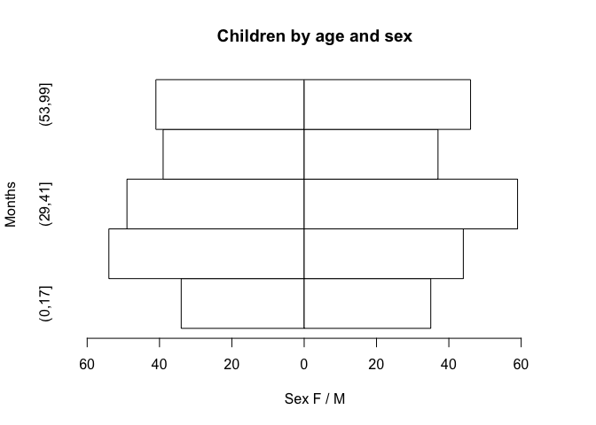
Note how the function has used default values for the axis labels, chart titles, chart limits &c.
We can override these default values if we need to:
plot.ci(oed.hp$day, oed.hp$wt, oed.hp$lci, oed.hp$uci,
ylim = c(-6, 10), xlab = "Day",
ylab = "Weight gain (g/kg/day)",
main = "Oedematous", col = "red")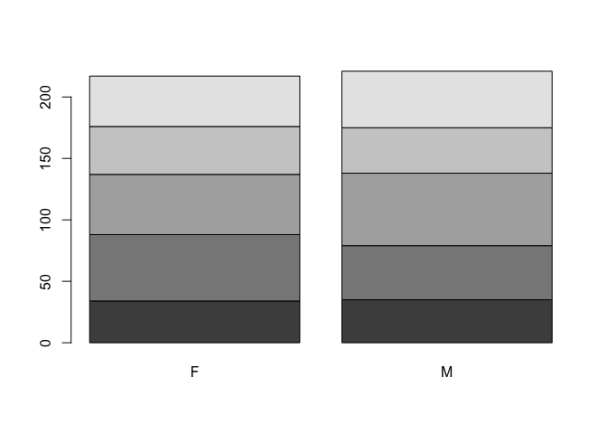
Do not close the plot window.
We should also check that we can plot another data series on this chart:
par(new = TRUE)
plot.ci(oed.lp$day, oed.lp$wt, oed.lp$lci, oed.lp$uci,
axes = FALSE, pch = 22, xlab = "", ylab = "", main = "",
col = "darkgreen")We can also add a legend:
legend(5, 8, legend = c("HP", "LP"), lty = c(1, 1),
pch = c(21, 22), col = c("red", "darkgreen"))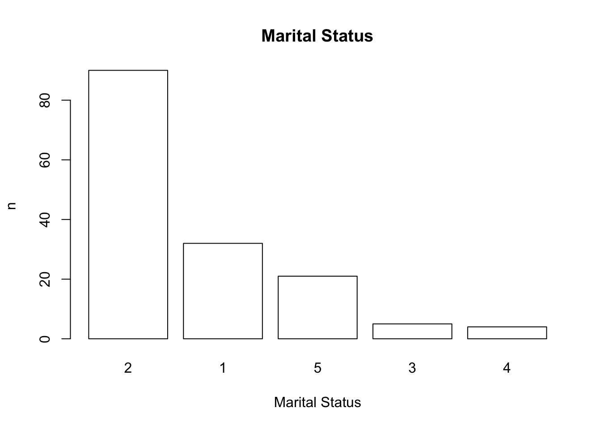
We should also check that we can produce plots of unconnected points:
plot.ci(oed.hp$day, oed.hp$wt, oed.hp$lci, oed.hp$uci, type = "p")Try plotting the data for the marasmic patients using the plot.ci() function.
You might like to use the save() function to save the plot.ci() function.